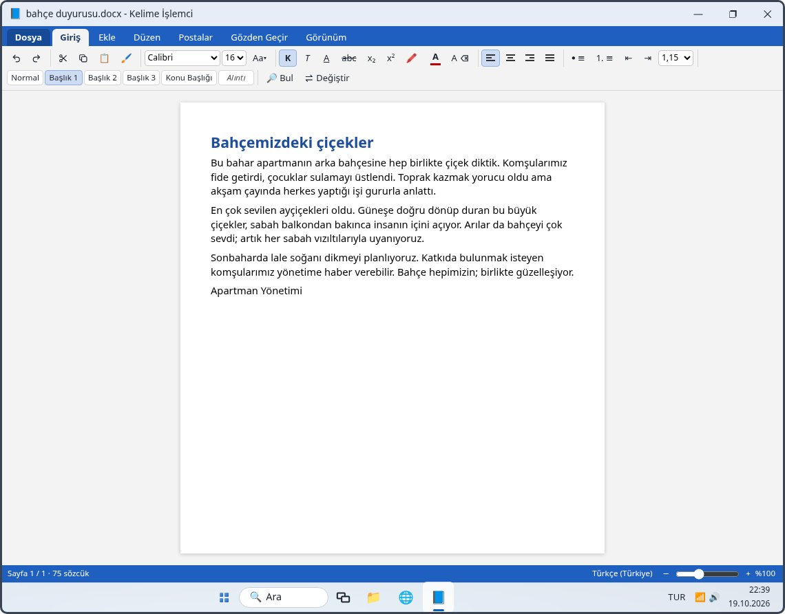

10. Hafta: Kelime işlemci (Word)
Alıştırmalar
Bu hafta
| 1 Dilekçe yazalım | 40 dk |
|---|---|
| 2 Apartman duyurusu | 40 dk |
| 3 Liste, tablo, resim | 40 dk |
| 4 Resim neden kaçıyor? | 25 dk |
| 5 Tablo incelikleri | 35 dk |
| 6 Başlıklar, bul-değiştir, yazım | 40 dk |
| 7 Biçim Boyacısı, satır aralığı | 25 dk |
| 8 Sayfa düzeni ve yazdırma | 35 dk |
| 9 Simgeler ve şekiller: ₺ °C ½ © | 25 dk |
| 10 Adres mektup birleştirme | 30 dk |
|---|---|
| 11 Büyük/küçük harf, stiller, cetvel | 30 dk |
| 12 Şablondan özgeçmiş | 40 dk |
| 13 Üst/alt bilgi, dipnot, köprü | 35 dk |
| 14 Numaralandırma ve içindekiler | 35 dk |
| 15 Bülten: sütun, kenarlık, sekme | 30 dk |
| 16 Tutanak: izle, açıklama, parola | 40 dk |
| 17 İlan: Metin Kutusu, WordArt | 30 dk |
| 18 Dilekçe parkuru | 25 dk |
Hafta sonunda: ödev (gerçek bilgisayarda on küçük görev) ve 19 soruluk test.
Ders 1 · Dilekçe

Ders 1 · Dilekçe
| 1 | Başlığı büyük harfle yazın (Caps Lock), Enter. |
|---|---|
| 2 | Başlığa üç kez tıklayıp seçin: Ctrl + B kalın, Ctrl + E ortala, boyut 11 → 14. |
| 3 | Metni yazın; paragrafı seçip Ctrl + J iki yana yasla. |
| 4 | Ekle → 📅 Tarih, alt satıra adınız; ikisini seçip Ctrl + R sağa hizala. |
| 5 | Ctrl + S Belgeler’e dilekçe; Ctrl + P yazdır. |
| Ctrl + B | Kalın (K düğmesi) |
|---|---|
| Ctrl + I / Ctrl + U | İtalik / altı çizili |
| Ctrl + E | Ortala |
| Ctrl + J | İki yana yasla |
| Ctrl + R / Ctrl + L | Sağa / sola hizala |
Ders 2 · Apartman duyurusu
| Başlık | Ortalı, büyük (24–28 punto), kalın |
|---|---|
| Önemli satır | Renk ya da kalın: gözün hemen gördüğü yer |
| Düzen → Sayfa kenarlığı | Sayfanın çevresine çerçeve çizer |
| Ctrl + P | Yazdırma önizlemesi: kâğıtta nasıl çıkacağını gösterir |
| Tek kâğıt | Önizlemede “tek kâğıda sığıyor” yazmalı; taşıyorsa yazıyı küçültün |
| Ctrl + S | Kaydedin; adı anlaşılır olsun |
Ders 3–4 · Liste, tablo, resim
| Ekle → Tablo | Satır ve sütun sayısını seçip ekler |
|---|---|
| Tab / Shift + Tab | Tabloda sonraki / önceki hücre |
| • Madde işaretleri | Enter yeni madde, iki kez Enter listeyi bitirir |
| 1. Numaralandırma | Sıralı adımlar için |
| Ekle → Resim | Bilgisayardaki fotoğrafı koyar |
| Dosya → PDF olarak kaydet | Değiştirilemeyen kopya: e-postayla göndermek için |
| Köşedeki yuvarlak | Orantılı büyütür / küçültür |
|---|---|
| Kenardaki tutamaç | Yalnızca en ya da boy: resim basıklaşır |
| ⊞ Düzen Seçenekleri | Metinle aynı hizada: harf gibi durur; Kare / Sıkı: yazı çevresinden akar, resmi sürükleyebilirsiniz |
| Resim Biçimi → ✂ Kırp | Siyah çizgileri içeri çekin, Enter |
Ders 5 · Tablo incelikleri
| Tabloya tıklayın | Sekmelerin yanında Tablo Düzeni çıkar |
|---|---|
| ↓ Alta ekle / ↑ Üste ekle | Yeni satır |
| → Sağa ekle / ← Sola ekle | Yeni sütun |
| ✕ Satırı sil · ✕ Sütunu sil | İşe yaramayanı kaldırır |
| Hücreleri birleştir | Yan yana hücreleri sürükleyerek seçin, sonra düğme |
| Çizgiler → Kalın | Yazdırınca çizgiler belirgin olur |
| Hücre içi → Orta | Yazıyı hücrenin ortasına alır |
Ders 6–7 · Düzenlemek
| Giriş → Stiller | Normal, Başlık 1, Başlık 2, Konu Başlığı |
|---|---|
| Ctrl + F · Ctrl + H | Bul · Değiştir (Tümünü değiştir) |
| F7 | Yazım denetimi: kırmızı dalgalı çizgili kelimeler; sağ tık doğrusunu önerir |
| 🖍 Vurgu rengi | Fosforlu kalem gibi |
| Gözden Geçir → Sözcük sayısı | Sayfa, sözcük, karakter |
| 🖌 bir kez tıklayın | Seçili yazının biçimini alır, sonraki seçtiğinize sürer |
|---|---|
| 🖌 çift tıklayın | Birçok yere sürersiniz; bitince Esc |
| Satır aralığı 1,15 / 1,5 | Sıkışık yazıyı ferahlatır; resmî yazılarda 1,5 |
| Tab paragraf başında | İlk satır girintisi |
| ⇥ / ⇤ | Paragrafı içeri alır / geri çeker |
Ders 8–9 · Sayfa ve simgeler
| Düzen → Kenar boşlukları | Dar: sayfaya daha çok yazı sığar |
|---|---|
| Düzen → Yönlendirme | Dikey (mektup), Yatay (geniş tablo) |
| Yazı taştı | Önizlemede “2 sayfa” yazıyorsa boşluğu daraltın ya da yazıyı küçültün |
| Filigran | ÖRNEKTİR, ACİL gibi silik arka plan yazısı |
| Ctrl + Enter | Yeni sayfa; Enter’a defalarca basmayın |
| Ekle → Simge | Klavyede olmayanlar: ₺ ° ½ © € ✓ ☎ |
|---|---|
| ₺ | Klavyede AltGr + T de olabilir; Simge menüsü her yerde çalışır |
| °C | Derece simgesi ° + C harfi |
| Ekle → Şekil | Kutu, yuvarlak kutu, ok; içine yazı yazılır: “GİRİŞ →” |
Yazdırmadan önce hep Ctrl + P ile önizlemeye bakın.
Ders 10 · Adres mektup birleştirme
| 1 | Davet mektubunu yazın. |
|---|---|
| 2 | Postalar → Alıcıları seç: kişi listesi (hesap tablosu; 1. satır Ad, Adres…). |
| 3 | Birleştirme alanı ekle: «Ad» gibi yer tutucular her mektupta değişir. |
| 4 | Sonuçları önizle ◀ ▶ ile her kişinin mektubuna bakın. |
| 5 | Bitir ve birleştir: tek tek belgeler ya da doğrudan yazdırma. |
Aynı mektubu otuz kez yazmak yerine bir kez yazar, listeden çoğaltırsınız.
Ders 11–12 · Harfler ve özgeçmiş
| Yazıyı seçin → Aa▾ | BÜYÜK HARF, küçük harf, Cümle düzeni, Her Sözcüğün İlk Harfi Büyük |
|---|---|
| Caps Lock açık kaldıysa | Yazıyı silmeyin; seçip Aa▾ → küçük harf |
| Başlık 3 · Alıntı | Küçük ara başlık · girintili eğik yazı |
| Satır aralığı 1,5 / 2,0 | Uzun yazı rahat okunur |
| Görünüm → Cetvel | Kenar boşluklarını ve girintiyi ölçer |
| Dosya → Yeni… → şablon | Başlıkları ve düzeni hazır belge |
|---|---|
| [Köşeli parantez] | Kendi bilginizle değiştirilecek yer; Ctrl + F → [ unutulanı bulur |
| Ekle → Üst bilgi / Alt bilgi | Her sayfada tekrarlanan yazı |
| Ekle → Sayfa numarası | “Sayfa 1 / 2” |
| PDF olarak kaydet | İş başvurusunda gönderilecek biçim |
Ders 13 · Üst bilgi, dipnot, köprü
| Ekle → Üst bilgi | Her sayfanın üstünde tekrarlanan yazı: Çınar Emekliler Derneği |
|---|---|
| Ekle → Alt bilgi | Her sayfanın altında: Hazırlayan: adınız, tarih |
| Ekle → Sayfa numarası | Alt bilgiye “Sayfa 1 / 2”; sayfalar karışırsa sırası bulunur |
| Başvurular → Dipnot Ekle | İmlecin yerine küçük bir sayı; açıklama sayfanın altına (Alt + Ctrl + F) |
| Dipnotu silmek | Metindeki küçük sayıyı silin; numaralar yeniden sıralanır |
| Köprü (bağlantı) | Yazıyı seçin → Ctrl + K → adres (www.cinar.bel.tr) → Ekle |
| Köprüyü açmak | Ctrl basılıyken tıklayın: tarayıcıda açılır |
Ders 14 · Uzun belge
| Satırları seçin → 1. ≡ | Numaralandırma: 1, 2, 3; araya madde eklenince numaralar kendiliğinden kayar |
|---|---|
| Giriş → Stiller → Başlık 1 | Satıra tıklayıp basın; Word onun bir başlık olduğunu bilir |
| Kalın + büyük yazı | Başlık gibi görünür ama içindekiler tablosu onu görmez |
| Başvurular → İçindekiler Tablosu | Başlıkları sayfa numaralarıyla listeler (Otomatik Tablo 1) |
|---|---|
| Ctrl + Enter | İçindekiler ilk sayfada tek başına kalsın |
| ⟳ Tabloyu Güncelleştir | Başlık eklenince, sayfalar kayınca; kendiliğinden yenilenmez |
| Ctrl + tık | Tablodaki satırdan o başlığa gider |
Ders 15 · Bülten
| Giriş → 🪣 Gölgelendirme | Paragrafın arkasını boyar: başlık bandı |
|---|---|
| Giriş → ▢ Kenarlık | Dış Kenarlıklar: çerçeve · Üst Kenarlık: kesme çizgisi |
| Yazıyı seçin → Düzen → Sütunlar → İki | Yalnızca seçilen haberler iki sütun olur |
| Seçmeden İki | Bütün belge iki sütun olur (başlık da) |
| Paragraf bölümünün oku → Sekmeler… | Sekme durağı konumu: 15 cm, öncü: 2 ......., Ayarla, Tamam |
|---|---|
| Tab | İmleci durağa götürür, arayı noktalarla doldurur |
| Adı Soyadı: ............ | Bütün satırlar aynı yerde biter |
| Nokta ya da boşluk tuşu | Hizalamak için kullanmayın: satır sonları kayar |
Ders 16 · Tutanak
| Gözden Geçir → 📝 Değişiklikleri İzle | Açıkken eklenen yazı altı çizili renkli, silinen |
|---|---|
| 💬 Yeni Açıklama | Seçili yazıya sağ kenarda not balonu; yazı değişmez |
| Sonraki ▶ · ◀ Önceki | Değişiklikleri sırayla seçer |
| ✔ Kabul Et · ✖ Reddet | Öneriyi işler · geri alır; ▾ Tüm Değişiklikleri Kabul Et |
| 🗑 Sil | Okunan açıklamayı kaldırır |
| 1 | Dosya → Bilgi → Belgeyi Koru → Parola ile Şifrele. |
|---|---|
| 2 | Parolayı yazın, Tamam; aynı parolayı yeniden yazın. |
| 3 | Kaydedin ve kapatın. |
| 4 | Açarken parola sorulur; yanlışsa belge açılmaz. |
Parolayı unutursanız belge kurtarılamaz: güvenli bir yere yazın.
Ders 17 · İlan
| Ekle → WordArt ▾ | Süslü, gölgeli başlık; bir biçim seçin |
|---|---|
| “Metninizi buraya yazın” | Seçili gelir; yazmaya başlayınca yerine geçer |
| Ctrl + E | WordArt da satır gibi ortalanır |
| Ne zaman? | İlan, afiş, davetiye; dilekçe ve tutanakta kullanmayın |
| Ekle → Metin Kutusu ▾ | Basit Metin Kutusu: çerçeveli ayrı yazı alanı |
|---|---|
| Sağa yaslı kutu | Paragrafın yanında durur, yazı çevresinden akar |
| Ne yazılır? | Telefon, “Giriş ücretsizdir”, önemli not: göze çarpması gereken kısa yazı |
| Ctrl + P | Kâğıtta nasıl duracağına bakın |
Ders 18 · Tekrar
Nasıl yapılacağı yazmaz; takılınca 💡 İpucu. Süreler tutulur.
Özet
| Ctrl + B · I · U | Kalın · italik · altı çizili |
|---|---|
| Ctrl + E · J · R · L | Ortala · iki yana · sağa · sola |
| Üç tık | Bütün paragrafı seçer |
| Ctrl + P | Yazdırma önizlemesi |
| Ekle → Tablo · Resim · Simge | Tablo, fotoğraf, ₺ ° ½ © |
| Kare / Sıkı | Resmi yazının yanına yerleştirir |
| Tablo Düzeni | Satır, sütun ekle; hücreleri birleştir |
| Ctrl + F · Ctrl + H · F7 | Bul · değiştir · yazım denetimi |
| 🖌 Biçim Boyacısı | Biçimi kopyalar |
|---|---|
| Düzen | Kenar boşlukları, yönlendirme, sayfa kenarlığı |
| Ctrl + Enter | Yeni sayfa |
| Postalar | Adres mektup birleştirme |
| Aa▾ · PDF | BÜYÜK / küçük harf · gönderme |
| Başlık 1 → İçindekiler Tablosu | Tabloyu Güncelleştir’i unutmayın |
| Sütunlar · Sekmeler | Seçili yazı iki sütun · noktalı satırlar |
| Değişiklikleri İzle | Kabul Et / Reddet · parola |
Ödev: kendi bilgisayarınızda on küçük görev; ödev kâğıdı yazdırılabilir. Test: 19 soru, tekrar içindir.